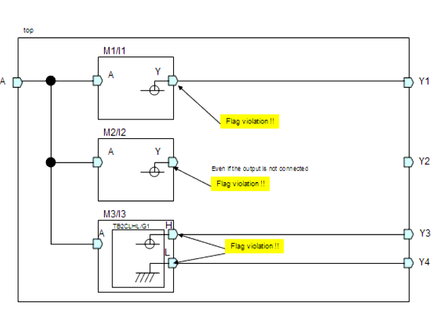
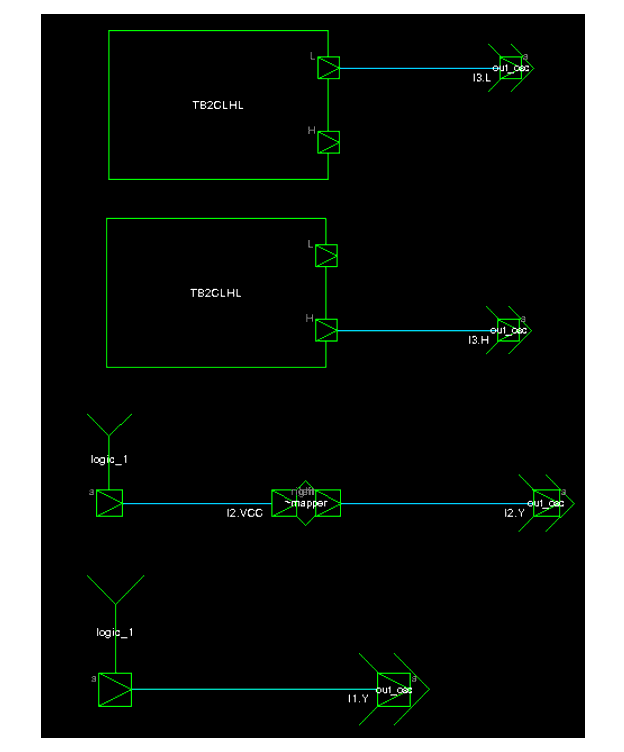

Description
This rule fires when Leda detects output ports of user defined modules/instances are connected to VDD/GND internally. This help designer to control output port connections in some specific modules (e.g. the output ports in layout hierarchy which are same as user- defined module/instance by parameters should not be connected to VDD/GND internally inout ports).
Argument: %s1 is the hierarchy name of illegal output port.You can use the rule_set_parameter Tcl command to configure below parameters:CON29_APPLY_MODULE - You can configure this parameter to allow LEDA to only apply this rule check on specific instances that are instantiated by the modules specified in this parameter.
CON29_APPLY_INSTANCE - You can configure this parameter to allow LEDA to only apply this rule check on specific instances that are specified in this parameter.
Policy
DESIGN
Ruleset
CONNECTIVITY
Language
VHDL/Verilog
Type
Hardware
Severity
Error
`timescale 1ns/1ps module top(Y1,Y2,Y3,Y4,A); output Y1,Y2,Y3,Y4; input A; M1 I1(.Y(Y1), .A(A)); M2 I2(.Y(), .A(A)); M3 I3(.H(Y3), .L(Y4), .A(A)); endmodule module M1(Y,A); output Y; input A; supply1 Y; endmodule module M2(Y,A); output Y; input A; supply1 VCC; assign Y = VCC; endmodule module M3(H,L,A); output H,L; input A; TB2CLHL G1(.H(H), .L(L)); endmoduleConfiguration
rule_deselect -all
rule_select -policy DESIGN -rule NTL_CON29
rule_set_parameter -rule NTL_CON29 -parameter CON29_APPLY_INSTANCE -
value { top.I1, top.I3 }
rule_set_parameter -rule NTL_CON29 -parameter CON29_APPLY_MODULE -value
{ M2 }
Case schematicViolations
13: output Y;
^
con29_case2.v:13: CONNEC> [ERROR] NTL_CON29: Should not connect the
output ports of user defined modules/instances to VDD/GND internally
top.I1.Y
21: output Y;
^
con29_case2.v:21: CONNEC> [ERROR] NTL_CON29: Should not connect the
output ports of user defined modules/instances to VDD/GND internally
top.I2.Y
30: output H,L;
^
con29_case2.v:30: CONNEC> [ERROR] NTL_CON29: Should not connect the
output ports of user defined modules/instances to VDD/GND internally
top.I3.H
30: output H,L;
^
con29_case2.v:30: CONNEC> [ERROR] NTL_CON29: Should not connect the
output ports of user defined modules/instances to VDD/GND internally
top.I3.L
Violation schematic